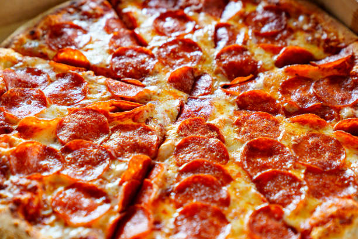

Pizza Pepperoni
La pizza pepperoni tiene su origen en América del Norte. Se trata de una pizza con base de salsa de tomate, mozzarella y pepperoni, un tipo de salami curado hecho a base de carne de cerdo y de vaca mezclados y sazonados con pimentón.
Ingredientes:
- Salsa de tomate
- Mozzarella
- Pepperoni
- Masa de pizza
- Pimentón